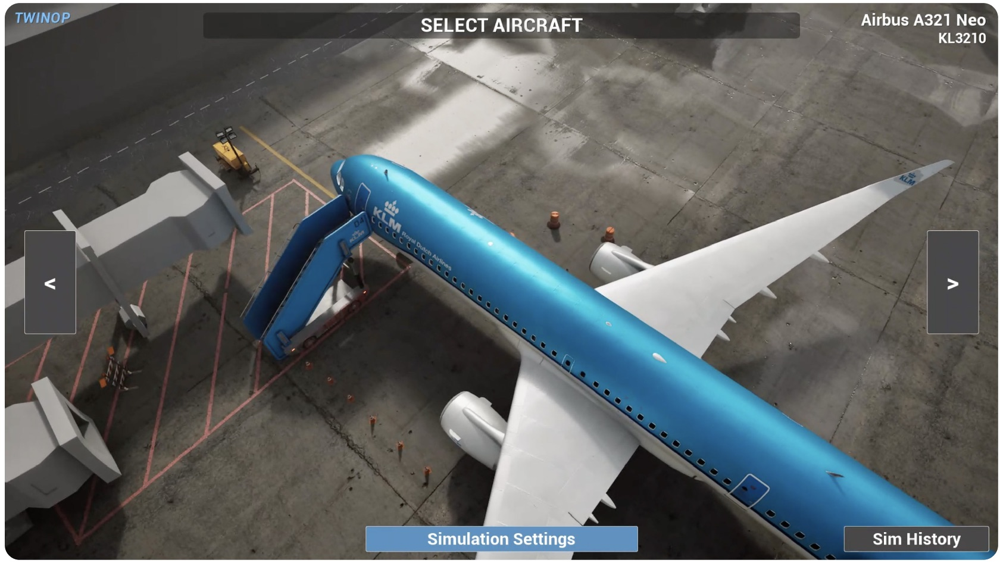
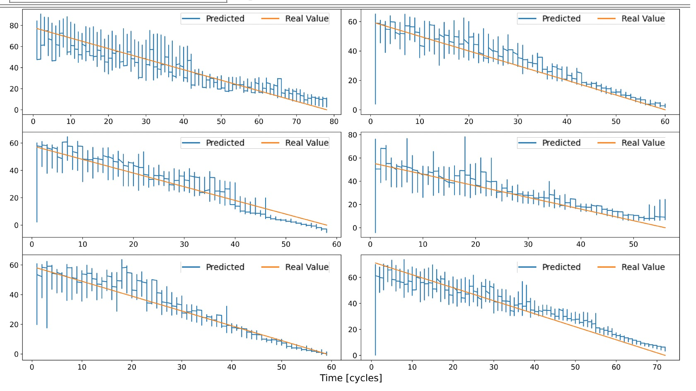
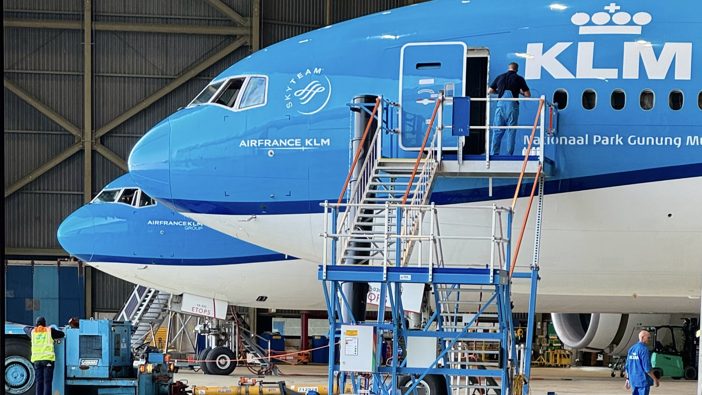
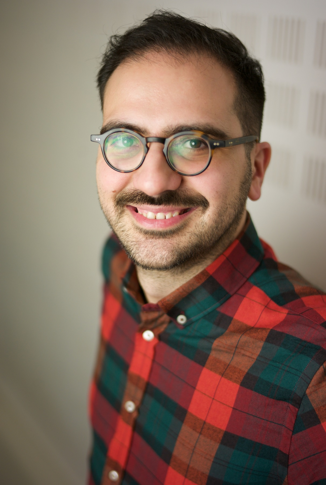

Simulation & Digital Twins
Simulation of airline operations for decision support, Computational engineering methods.
Research & Innovation • Aviation & Aerospace • Tech & AI
I work at the intersection of aviation, emerging technologies, trustworthy AI, simulation, and data-driven maintenance.
I’m a technologist working across physical and digital engineering. My work sits at the intersection of aviation, technology, strategy, and sustainability. I bring technical, managerial, and research expertise from airlines, academia, and aerospace manufacturers, and I’ve led projects spanning aircraft system design, simulation, operations, and maintenance—as well as modelling of aviation processes. I serve on EASA’s Rulemaking Committee on Trustworthy AI (RMT.0742) and lead the Diagnostics & Prognostics Working Group of the Independent Data Consortium for Aviation (IDCA), alongside roles on technical advisory boards, editorial boards, international working groups, and academia as a visiting scholar.


Simulation of airline operations for decision support, Computational engineering methods.

Explainability, V&V, and Data Management for safe and certifiable applications in aviation.

Diagnostics & Prognostics, Workscoping, RUL estimation for reduction of disruptions and waste.
Peer-reviewed papers, conference proceedings and book chapters on predictive maintenance, diagnostics & prognostics, trustworthy AI, and gas turbine modelling.

I was born and raised in Thessaloniki, Greece, and over the last sixteen years I’ve lived in the UK, Belgium, France, and the Netherlands. Beyond aviation, I’m a lifelong photographer -darkroom to digital- drawn to landscapes, street scenes, aircraft, and the places I travel. Music is a constant companion; I’ve been collecting records and other physical formats for more than three decades. I now live in Amsterdam, where you’ll often find me building LEGO sets with my three children or exploring science exhibitions together.
Find me on: